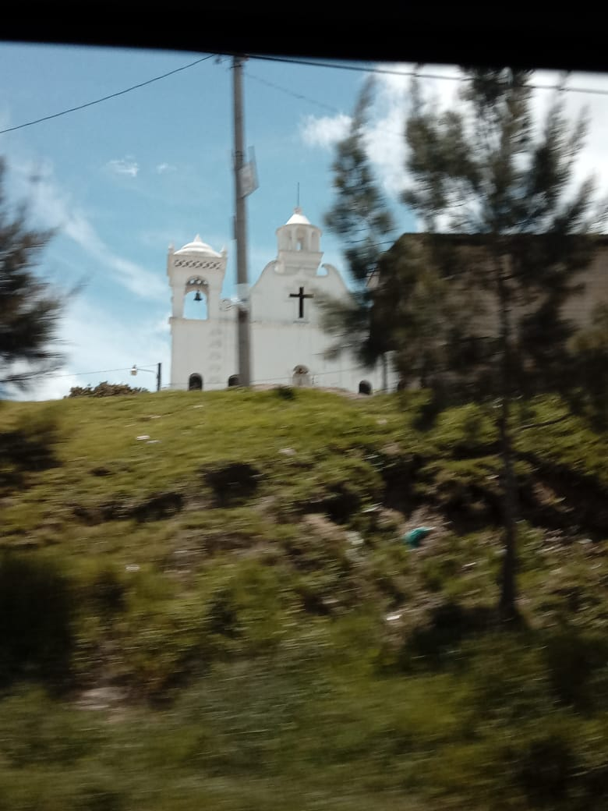

Pretty churches of Guatemala



Today was the election in Guatemala and I also couldn’t really move because I sprained my ankle at basketball yesterday. Feeling a mix of abundance and isolation at the same time. I am also feeling lucky to be a part of history in Guatemala and also I felt a little disconnected from the space and the celebrations. It’s weird knowing tha t I’ll only be here for 4 more months.
My reflections on the past month and a half: I felt weird being back in the states and feel weird being here. I am increasingly feeling like 6 months is not enough time here. I am just starting to get to know what this works and getting to a point where I feel useful and am really enjoying myself. At the same time, I feel my college experience and friends are ever so fleeting. I love so many of you and a lot of you will graduate in like 8 months?? WHAT?? and then in a year and 8 months I GRADUATE??? I feel so bad missing treasured time where I could live within a walking distance of so many of my loved ones. But also I think I'll feel so much guilt leaving here. How can I know so much about struggle in Guatemala and build relationships and then just leave. I find comfort in two things: 1) Knowing that there will be community of Former Acos (my job) in philly that I can maintain solidarity networks with and 2) feeling small! This may seem weird because I tend to take up a lot of space in my relationships with you all! and I am quite Tall. However, I find peace in being small in my organizing. I don't want to be big. I am not going to fix anything by myself. I want to be small. And I want to be in community with other people, and I want us to all stand so close that from above we look very big and scary. I am a small part of a huge decades long organizing effort in Guatemala. That is beautiful. When I am gone, someone else will take my place, but they will be informed by me. and hopefully on the ground I can be big to some people (I am Tall). I also am worried about the Guatemala political context that I shared. I know that I exist in privilege in this space and that makes me removed from the struggle. There are boundaries on where and how I can support and those are tricky to navigate. I want to be all in, but sometimes I'm not I can be within the parameters of my role as an accompanier. I also miss all of you and being back was so nice and a taste of what I am missing. But, after not seeing anyone over the summer I know that my relationships with you await my return and that they will pick up where they left off and I'm excited to have many hugs and laughs and even maybe a giggle.